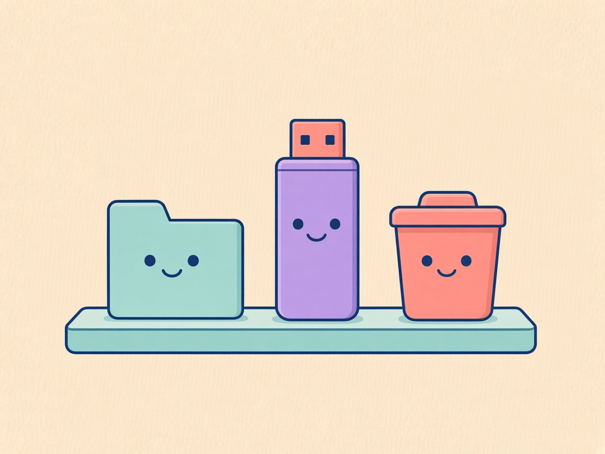
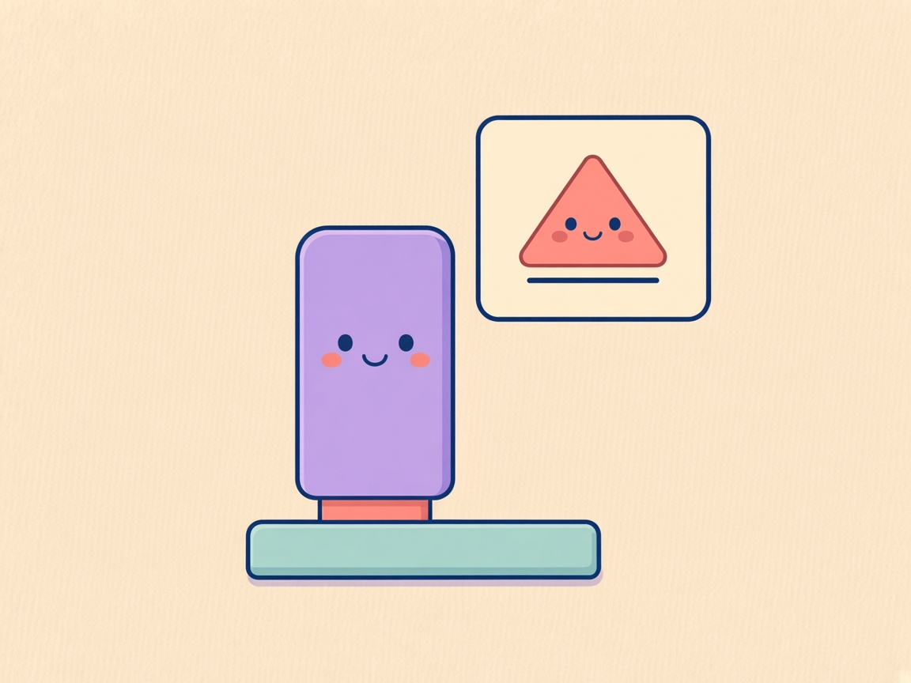
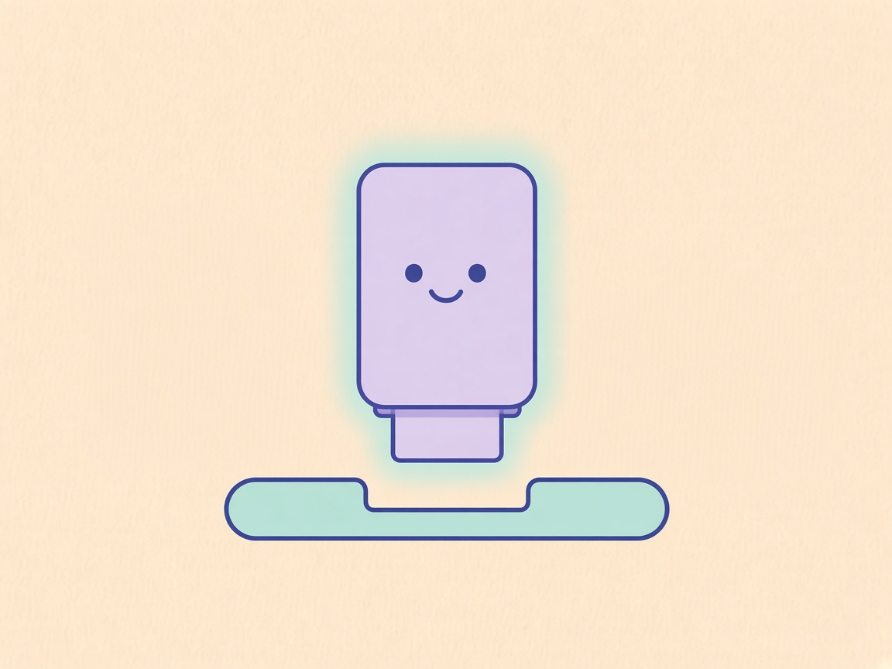

01 / Laufwerk am Dock

Deutsch
Am Dock
Ich bin da.
Externe Laufwerke stehen im Dock, nah bei Ordnern und dem Papierkorb.
English
On the dock
Here I am.
External drives sit on the dock, near folders and Trash.
USB auswerfen / Eject the drive. Review preview for 0.12.0.md. Art is shared. Copy is selectable. German left, English right. Google Fonts (Source Serif 4) are for this static file only. The native Update window does not load this stylesheet.

Am Dock
Ich bin da.
Externe Laufwerke stehen im Dock, nah bei Ordnern und dem Papierkorb.
On the dock
Here I am.
External drives sit on the dock, near folders and Trash.

Die kleine Karte
Wirf mich aus.
Zeige auf das Laufwerk. Die Karte nennt Name und freien Speicher und bietet den Auswurf.
The small card
Eject me.
Point at the drive. The card shows the name, free space, and eject.

Ruhig weg
Ich darf gehen.
Das Symbol wird blass und verschwindet, wenn das Aushängen klappt. Dann darfst du das Laufwerk abziehen.
Safe to remove
I can go.
The icon dims, then disappears once unmount succeeds. Then the drive is safe to remove.